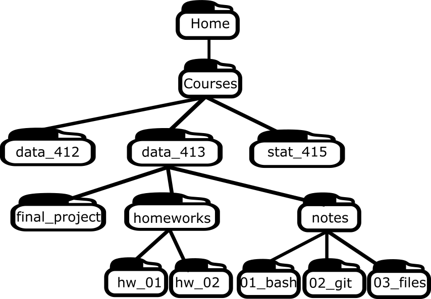

File Structure
Learning Objectives
- Understand file systems on Windows and Mac.
- Better organize your files.
Overview
Your computer organizes files using a hierarchical directory structure.
This structure follows a tree-like pattern of directories, called folders on Windows and Mac.
Folders contain files and other folders, called subfolders or subdirectories.
The top-level directory is called the root.
The root contains all files and directories on your computer.
Your home directory is the default location for your files.
- On a Mac, this is typically
Users/your_username, but it may differ. - On Windows, this is typically
C:\Users\your_username, but it may differ.
- On a Mac, this is typically
Note that Mac (and other Linux varieties) uses forward slashes, while Windows uses back slashes. This is not something you have to worry about most of the time.
- Git Bash for Windows uses forward slashes.
- You can (should) always use forward slashes in R, even on Windows machines.
The home directory is also the working directory of your shell when you first open it.
You use a file management program to navigate and manage your files:
- On Windows: File Explorer
- On Mac: Finder
There are tons of alternatives if you are curious.
You should know how to perform the following tasks using your file management system. If you do not know how to do any of them, come talk to me:
- Navigate to your home directory.
- Navigate to your Documents folder.
- Navigate to your AU OneDrive.
- Create a new folder.
- Move a file from one folder to another.
- Copy a file and paste it in another folder.
- Rename a file or folder.
I won’t cover how to do them in these notes because even different versions of the same operating system have slightly different workflows.
To add the home directory to your sidebar on Mac for quick access:
- Finder -> Settings -> “Show these items in the sidebar” -> Check your username (with the home icon).
File/Folder Naming
- Do not use spaces. Use underscores (
_) instead (hyphons are also very common)- Spaces make command-line scripts more annoying to code up.
- Do not use periods.
- These should be reserved for file extensions.
- Do not use other special characters like back slashes or dollar signs or quotes
- These can make it harder for the machine to read the files.
- Do not depend on case to differentiate files.
- Some file systems are case sensitive, but others are not. So if you depend on case (e.g., “File.txt” vs “file.txt”), then you are setting yourself up for a headache.
- I typically just use lower_snake_case for all files/folders except top level folders (like “Documents” or “Downloads” or “Desktop” etc)
- DO use numbers to help with default ordering for files.
- E.g. Suppose “intro.R” was done before “basics.R”. To respect that order, name it “01_intro.R” and “02_basics.R”.
- Exercise (From R for data science): Rename these files (I’ve added context to help you)
- “alternative model.R”: Second modeling approach
- “code for exploratory analysis.r”
- “finalreport.qmd”: Done on March 20, 2022
- “FinalReport.qmd”: Done on April 2, 2022
- “fig 1.png”
- “Figure_02.png”
- “model_first_try.R”: First modeling approach
- “run-first.r”: Loads the data
- “temp.txt”: Notes for the final report
File Organization
Because your file system is hierarchical, your file organization should take advantage of that structure.
Bad example: Placing all of your files directly on the Desktop or at the same folder level.
- This is more common than you might think, but it makes files hard to manage.
There are many good ways to organize your files. Here’s one recommended structure:
In your home directory, create a folder called
Courses.Inside
Courses, create a folder for each course (e.g.,data_412,data_413).Within each course folder, include
homeworksandnotesfolders.Inside the
homeworksfolder, create one folder per assignment (e.g.,hw_01,hw_02, etc.).Inside the
notesfolder, create one folder per topic (e.g.,01_bash,02_git, etc.).Place your work in the appropriate subfolders.
Add other subfolders as needed (e.g.,
final_project).
Visualization:

Using numbers for the folder names in this way makes sure they are ordered the same way as the order of discussion.
Exercise:
- Create a “Courses” directory in your home directory.
- Create a “data_413” or “data_613” directory in your “Courses” directory.
- Create “homeworks” and “notes” directories in your “data_413” or “data_613” directory.
- Transfer your current notes for this class from wherever they are to your new directories. Make sure they are named well (no spaces, numbered ordering, etc).
Some file things you might not know
File extensions
A file extension is a suffix for a file (like “.txt”, “.jpg”, “.R”, etc). It is primarily used to tell the operating system what program to use to open it.
When you double click on a file, your operating system knows what program to use (almost) only because of the file extension.
Windows sometimes hides the file extension. You should change the settings so you can see them:
- Open File Explorer, click on the “View” tab, and check the “File name extensions” box.
There are ways to choose the default program to use when opening a file with a given file extension.